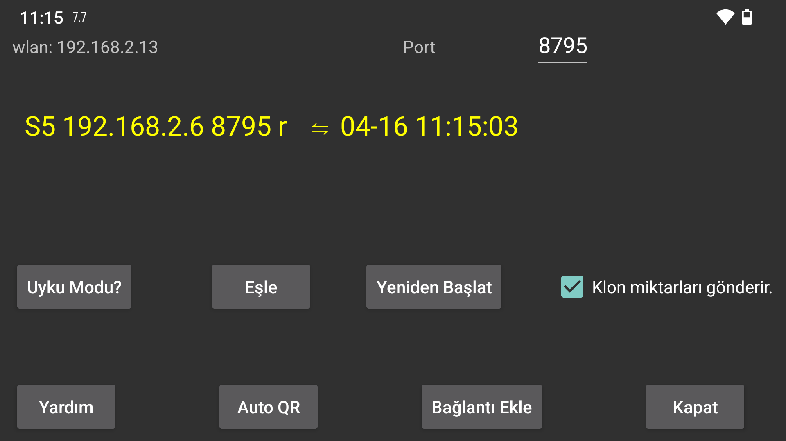

Baska bir cihaza veri gönderin veya baska bir cihazdan veri alin. Juggluco çalistiran bir android cihaza baglanarak verileri burada oldugu gibi görüntüleyebilirsiniz. Tarama verilerini aldiktan sonra, ayna (klon) cihazi sensörle Bluetooth üzerinden de iletisim kurabilir. Cihazlardan yalnizca birinin sensörle iletisim kurdugundan emin olmak için, Akis degerleri IP/TCP üzerinden geldiginde "Bluetooth üzerinden Sensör" otomatik olarak kapatilir.
Bu ekranda wlan'dan sonra bu cihazin yerel wlan IP'si gösterilir, bunu baglandiginiz ev aginizdaki diger cihazda (ya da uzaktan baglaniyorsaniz modeminizde) belirtmeniz gerekir.
Port'tan sonra, bu uygulamanin baglantilar için dinledigi TCP portunu degistirebilirsiniz.
Bagla nti ekle'ye tiklayarak hangi ana bilgisayarlara nasil baglanacaginizi belirtebilirsiniz.
Güvenilir bir ag baglantisi Android'de pil optimizasyonu ve arka plan kisitlamalari nedeniyle kesintiye ugrarsa, Uyku moduna basmak bunu degistirmenize yardimci olur.
Juggluco bir Ayna (klon) uygulamasi olarak çalisiyorsa (Juggluco çalistiran baska bir cihazdan glikoz degerlerini aliyorsa), düsük ve yüksek glikoz alarmlarini ve ilgili bildirimleri belirleyebileceginiz bir iletisim kutusuna gitmek için Alarmlar'a basabilirsiniz.
Mirror (klon), birbaglanti gönderir:Uygulama, baska bir cihazda çalisan bu uygulamadan ilaç, yiyecek ve spor verisi miktarlari alirsa, bu bilgileri burada eklememeli veya degistirmemelisiniz. Kontrol etmek bunu imkansiz hale getirir.
Sync Bagli cihaza yeni veri gönderir veya ister.
Yeniden Baslat: Mevcut baglantiyi kapatir ve yeni bir baglanti olusturur.
Wifi (sadece WearOS'ta):Bu ayar kapali oldugunda, WearOS pil ömrünü korumak için bir süre sonra WIFI'yi otomatik olarak kapatir ve Juggluco, telefon ile saat arasindaki baglanti için Bluetooth kullanimina geçer. Açik oldugunda ise, WearOS'tan WIFI'yi açik tutmasi istenir ve kapanmasi daha uzun sürer, ancak yine de kapanabilir. Bu seçenegi ayarlamak normalde gerekli degildir ve WearOS üreticileri WIFI'yi açmanin pil kullanimini arttiracagini düsünüyor.
Mevcut baglantilar bir listede gösterilir, etiket, IP portu ve son basarili senkronizasyonun ayi, günü ve saati gösterilir.
Baglantinin nasil kullanildigi asagidaki gibi kisaltilmistir:
n: miktarlar (sayilar)
s: taramalar
b: akis (bluetooth)
r: alinan
Daha fazla bilgi için Mirror (klon) baglantilari hakkinda yardim bölümünü okuyun"Bagla nti ekle" Ayrica bakiniz https://www.j uggluco.nl/Juggluco/index.html#mirror
Android Juggluco uygulamasini bir Android Emülatörü yardimiyla Windows, Macintosh veya Linux bilgisayarda çalistirabilirsiniz (örnegin Genymotion). Emülatördeki Juggluco, sensöre bagli bir Android telefondan bir Mirror (klon) baglantisi araciligiyla veri alir. Pinch hareketleri (iki parmagi birbirine dogru yakinlastirma veya uzaklastirma) fare isaretçisini hareket ettirirken bir tusa (Genymotion'da Kontrol) basilarak simüle edilebilir.